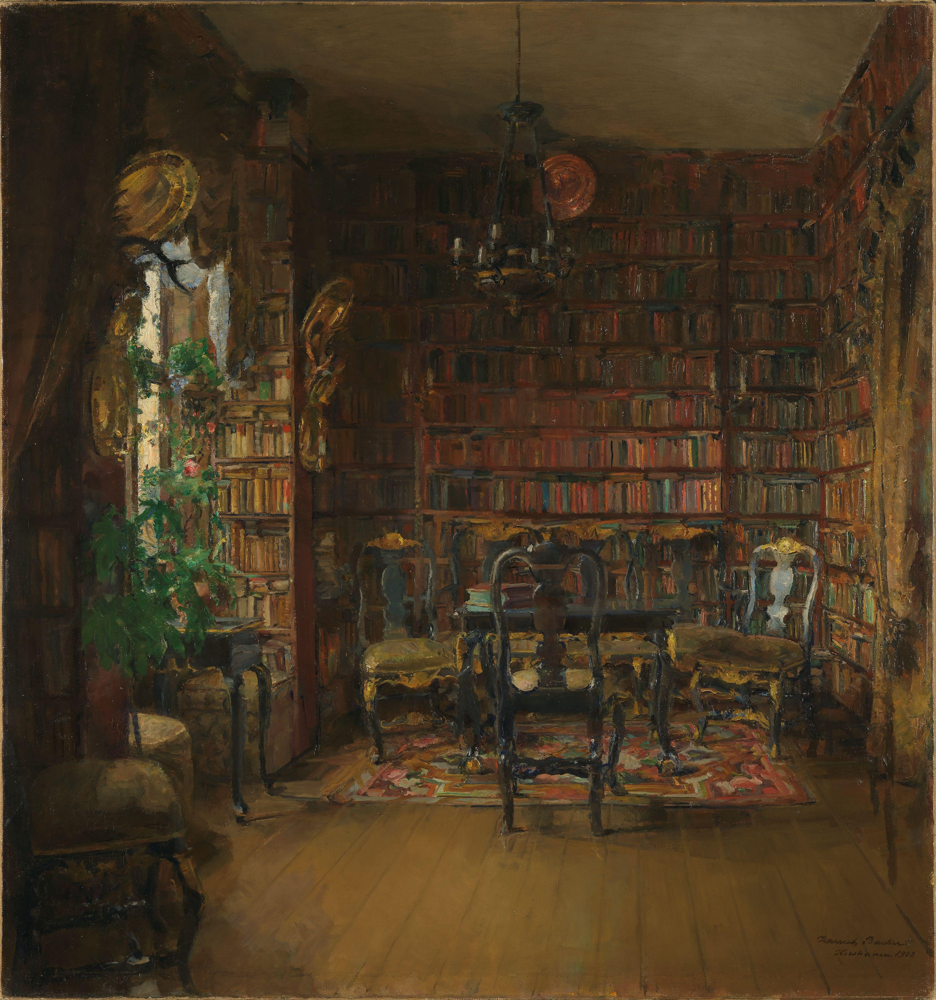

An evolving collection
The bookshelf
Every cover has a place here. Open a book for its details and any published journal notes.
The journal
Reading Stats
About
The Reading Room started because I read a lot and wanted a better way to keep track of the books in my life, including the ones I’ve finished, the ones I’m reading now, and the ones I want to pick up next.
I also wanted a place to write down my thoughts after reading: what a book was about, what stood out to me, and whether I would recommend it to someone else. I hope these reflections can help other readers find books they might enjoy.
Over time, I’d like this to become a space where readers can share recommendations, reading lists, and their own thoughts on books. The idea is simple: discover good books, talk about them, and connect with people who enjoy reading too.
— Dan
Return to the reading room ↑